Subset Sum Automata
Subset sum automata are a family of cellular automata based on the subset sum problem. They're on a square grid like Conway's Game of Life, but instead of each cell being just on or off, the state is a nonnegative integer:
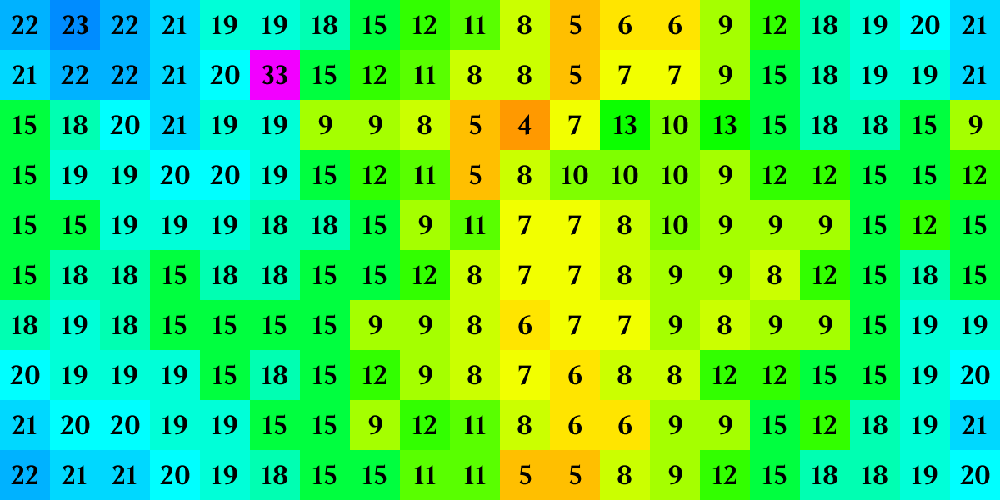A subset sum automaton is defined by three integer parameters: a target offset, a reward, and a penalty. At each time step, each cell determines its target number by adding the target offset to its own value and checks its orthogonal and diagonal neighbors to see if any subset of them sum to this number. If such a subset exists, the reward is added to the cell. If not, the penalty is subtracted from the cell.
The above image comes from the +3/1/1 automaton, meaning the target offset is +3, the reward is 1, and the penalty is 1. Some examples:
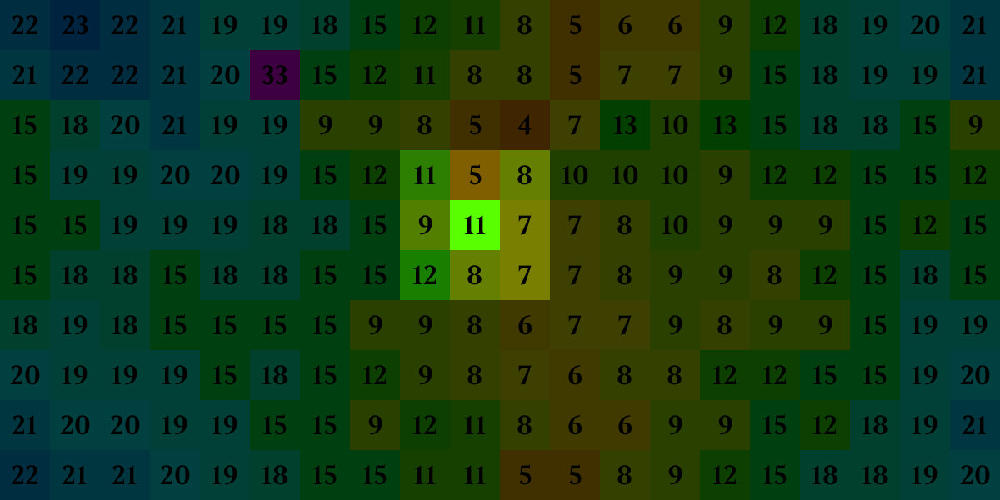The target number for this cell is 14 (11+3). There's exactly one subset of its neighbors which sum to 14 — the two 7s — but that's enough for it to earn its reward. This cell's value will increase by the reward (1) to 12 next generation.
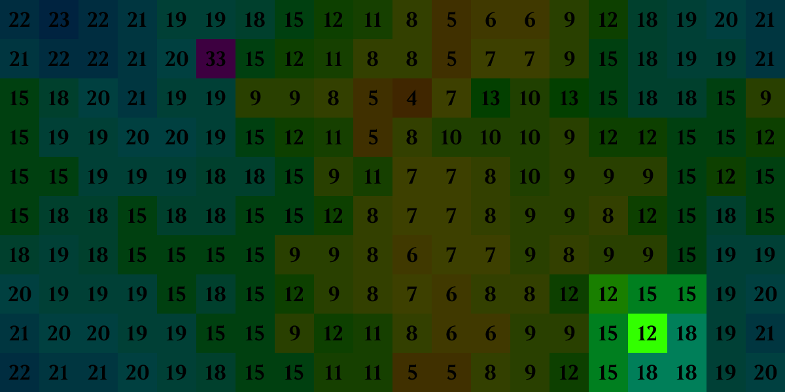The target for this cell is 15 (12+3), and there are four subsets of its neighbors that sum to 15: each of the 15s by themselves. This cell's value will increase by the reward (1) to 13 next generation.
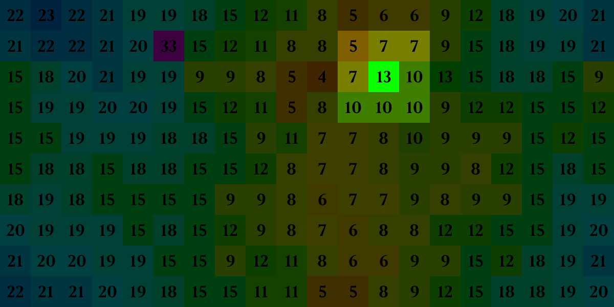The target for this cell is 16 (13+3) and, although there are subsets of its neighbors that sum to 15 and 17, there's no subset that sums to 16. This cell's value will decrease by the penalty (1) to 12 next generation.
Here's what it looks like running from a random seed:
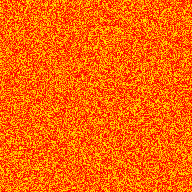Many subset sum automata have this chaotic, pulsating appearance. Clusters of low values tend to increase, since it's easy to sum them together to whatever target number you're trying to reach, and clusters of high values tend to decrease because they don't have access to smaller neighbors that get them to the exact value they need. In +3/1/1, the penalty is low enough that even when the values of the fan-like structures become too large and they begin to collapse, they stick around until the low-value medium around them aligns in such a way that they can grow again.
+3/1/1 doesn't look Life-like: there are no still lifes, no oscillators, and no spaceships. You can't have a still life when cells are being either rewarded or penalized every turn; oscillators, though, we can do. Here's one with period 4 in +5/4/7:
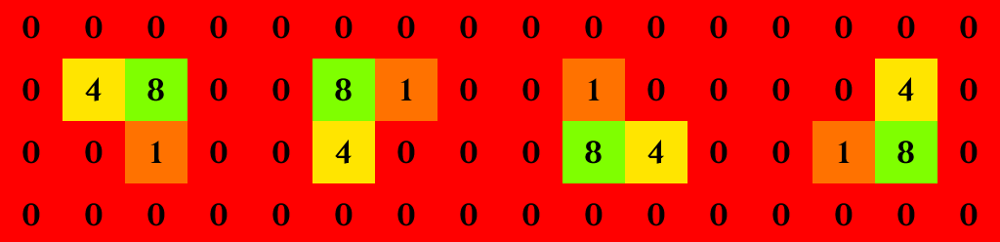And a c/8 spaceship in +12/5/9:
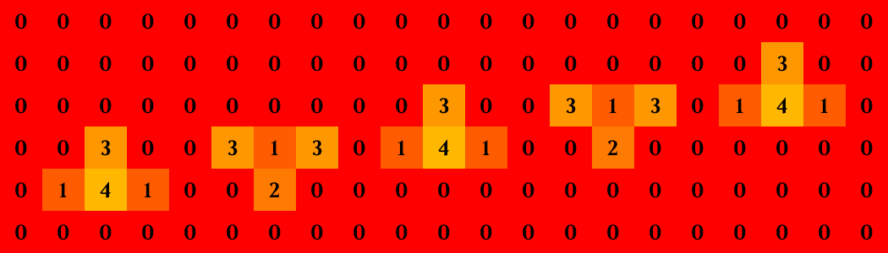Despite being one of the simpler spaceships I've found, its cells oscillate between as few as two states (0 and 5 on the outermost shell that appears one in every eight generations), and as many as twenty-two in the central column.
Between the Life-like and the un-Life-like, plenty of variety can be found just by fiddling with the target offset, penalty, and reward:
You tend to see the most interesting results when the reward and penalty are coprime; this way any cell can reach any value. For example, a rule with a reward of 2 and a penalty of 4 could never see odd values become even or odd values become even. On the subject of undesirable parameters, it's easy to create rules that tend towards divergent patterns that, while cool looking in their own right, are really just numbers getting larger in larger in a predictable way. A rule with a higher reward than penalty will tend to diverge (but not always, as some of the rules above show). A low target offset also increases the odds of divergence. An example is +1/1/1, where a small seed of alternating 1s and 0s can grow adjacent cells to arbitrarily large values:

Which can "crystallize" a gradient of values that always have a neighbor with the value of their target number just one higher than themselves:
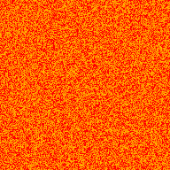Another type of divergent pattern never grows in population but nevertheless reaches arbitrarily large values, like this small square in +3/5/7:
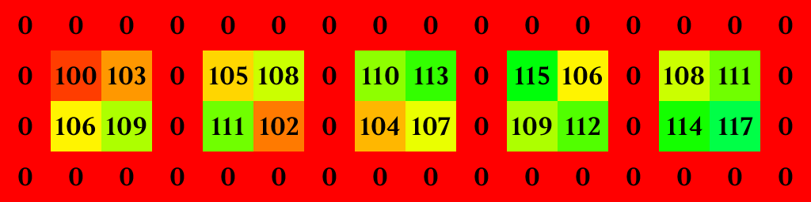Unlike their plane-devouring brethren, these bounded divergent clusters can be useful for pattern construction. They're nearly impossible to disrupt and their values are only ever fit for summing to their own target numbers, meaning that as far as their neighbors are concerned, they're worthless for summing to moderate values and might as well be locked at 0. This ability to "shut off" cells makes for readily controllable machinery, as in this +3/5/7 gun derived from naturally occurring patterns:
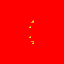But by far the strangest thing I've found doesn't have anything to do with diverging values. It's this, a replicator spaceship:
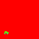This self-duplicating spaceship runs in a variant of +10/3/11 that allows each cell to use its own value as well as the values of its neighbors to sum to the target number. It occurs naturally and with high frequency in random soups using this rule. It begins life with a population of just 8 (which can be trivially reduced to 6) and 48 generations later emits a copy of its earlier self. What makes this replicator somewhat unusual, I think, is that the "mature" version of it — once it has emitted a copy — can no longer replicate. It's like an actual organism, except that it doesn't die. But since that makes it a linear-growth pattern, I guess that's okay with me.
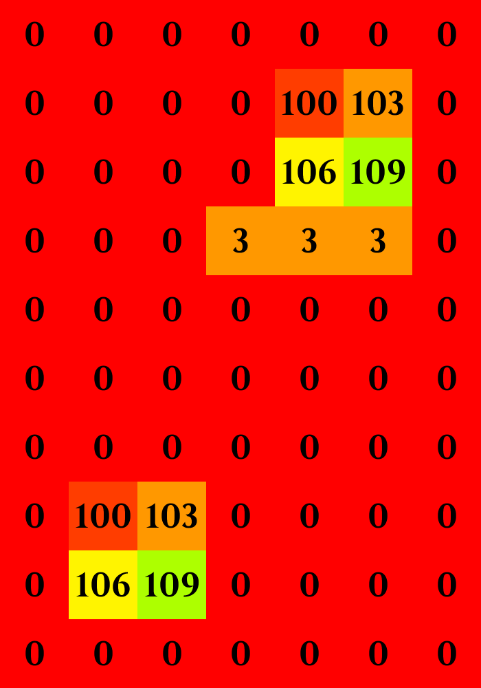I haven't yet found a variant of the subset sum automata that matches the simultaneous unpredictability and intuitiveness of beloved and better studied CA like Life. Obviously. There are, though, plenty of avenues still to be explored. A programmatic search for interesting patterns in the ash of random soups would find plenty of cool stuff I didn't have the patience to look for in my hand-tuned experiments. I've been surprised by how different a rule's behavior can be when you only use orthogonal neighbors, or throw in a cell's own value as in my replicator example. There are a couple of interesting rules that use a constant target number instead a target offset, and the new sums you can find by permitting negative numbers are probably worth checking into... but ultimately, the only thing I know about subset sum automata is that they make some pretty cool GIFs.